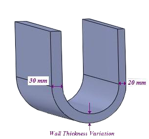

部品において、公称肉厚に対する肉厚の変動は、ユーザーが指定した範囲内でなければなりません。
肉厚の変動は、スムーズな金型充填を可能にするために許容範囲内である必要があります。理想的には、肉厚は部品全体で均一（公称肉厚と同一）であるべきです。実際には、機能要件や外観要件により、肉厚の変動は避けられません。しかし、その変動量は最小限に抑える必要があります。プラスチック部品における肉厚の変動は、冷却速度、収縮、反り、変形の差異を引き起こします。
最小肉厚条件では、公称肉厚よりも薄く、かつ許容される割合の変動範囲内に収まっていない肉厚は不合格となります。
一方で、公称肉厚よりも厚く、かつ許容される割合の変動範囲内に収まっていない肉厚は、最大肉厚条件において不合格となります。
一般的なガイドラインとして、部品の肉厚は公称肉厚から25％を超えて偏らないようにする必要があります。
